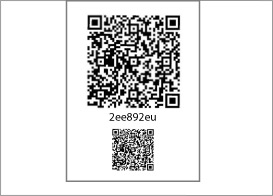
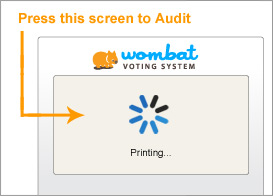
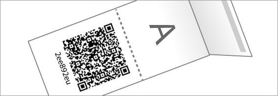
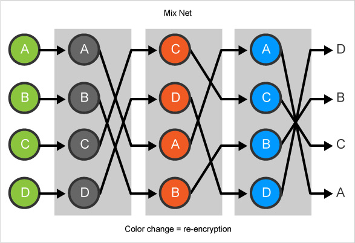

המערכת שלנו מבטיחה: 1) כל בוחר/ת יכול/ה לוודא שהצבעתו/ה נרשמה כהלכה בדף מעקב ההצבעות. 2) כל ההצבעות שמופיעות בדף המעקב משויכות לבוחר/ת. 3) כל אחד יכול לוודא שתוצאות הבחירות עקביות עם תוכן דף מעקב ההצבעות.
מערכת הצבעה בעלת שלוש התכונות הללו נקראת ניתנת לאימות מקצה לקצה (או "ביקורת פתוחה"). במערכת כזו אף אחד, אפילו לא מנהלי מערכת ההצבעה, אינו יכול לשנות הצבעה מבלי שהדבר יתגלה. Wombat Voting היא אחת ממערכות הצבעה מודרניות מספר שנהנות מאימות מקצה לקצה. הבה נראה מדוע, על ידי סקירת תכונות אלו אחת לאחת.
כזכור, הפתק מורכב משני חלקים: חלק טקסט גלוי וחלק הצפנה אלקטרונית של ההצבעה. הבוחר/ת יכול/ה לוודא שהטקסט הגלוי אכן תואם את בחירתו/ה. החשש שלנו הוא שהמכונה מרמה (או פגומה) והטקסט הגלוי אינו תואם את ההצבעה המוצפנת.
עם זאת, שימו לב שאי-התאמה כזו (אם קיימת) הייתה מתגלה בביקורת אם הבוחר/ת היה/הייתה בוחר/ת לבקר את הפתק. כמו כן, מכונת ההצבעה אינה יודעת מראש איזה פתק ייבדק בביקורת. לפיכך, מכונה מרמה (או פגומה) צפויה להיתפס. חישוב סטטיסטי פשוט מראה שמספר קטן מאוד של ביקורות (כ-1-2% מההצבעות) מספיק כדי לתפוס מכונה מרמה (או פגומה). אם המכונה עוברת את כל בדיקות הביקורת שלנו, נוכל להסיק בביטחון גבוה מאוד שמכונת ההצבעה פועלת כהלכה, כלומר, שהיא מייצרת פתקים עקביים שבהם ההצפנה האלקטרונית תואמת את נתוני הטקסט הגלוי.


לסיכום, הביטחון שלנו ברישום הנכון של הפתקים מבוסס על:
הבוחר/ת יכול/ה לוודא במו עיניו/ה שהטקסט הגלוי אכן תואם את בחירתו/ה.
הביקורות האקראיות מבטיחות שהמכונה מדפיסה פתקים עקביים, שבהם ההצפנה האלקטרונית של ההצבעה תואמת את הטקסט הגלוי.
הבוחר/ת יכול/ה לוודא שהנתונים המוצפנים שמופיעים בדף מעקב ההצבעות תואמים את ההצפנה האלקטרונית שמופיעה על הפתק (ושניתנה לו/ה כקבלה).
2. כל ההצבעות שמופיעות בדף מעקב ההצבעות משויכות לבוחר/ת.
כאן אנו סומכים על חברי ועדת הקלפי שיזהו כל בוחר/ת ויאפשרו לכל בוחר/ת להצביע פעם אחת בלבד.
3. כל אחד יכול לוודא שתוצאות הבחירות עקביות עם תוכן דף מעקב ההצבעות.
בתהליך הספירה, ההצבעות האלקטרוניות בדף המעקב מעורבבות תחילה באופן אקראי ברשת ערבוב ולאחר מכן מפוענחות. כל אחד יכול לאמת את תקינות שלבי הערבוב והפענוח על ידי בדיקת ההוכחות הנלוות. אימות תוצאות הבחירות הוא פשוט ברגע שכל הפענוחים ידועים.


אימות מקצה לקצה
המערכת שלנו מבטיחה:
1) כל בוחר/ת יכול/ה לוודא שהצבעתו/ה נרשמה כהלכה בדף מעקב ההצבעות.
2) כל ההצבעות שמופיעות בדף המעקב משויכות לבוחר/ת.
3) כל אחד יכול לוודא שתוצאות הבחירות עקביות עם תוכן דף מעקב ההצבעות.
מערכת הצבעה בעלת שלוש התכונות הללו נקראת ניתנת לאימות מקצה לקצה (או "ביקורת פתוחה"). במערכת כזו אף אחד, אפילו לא מנהלי מערכת ההצבעה, אינו יכול לשנות הצבעה מבלי שהדבר יתגלה. Wombat Voting היא אחת ממערכות הצבעה מודרניות מספר שנהנות מאימות מקצה לקצה. הבה נראה מדוע, על ידי סקירת תכונות אלו אחת לאחת.
1. כל בוחר/ת יכול/ה לוודא שהצבעתו/ה נרשמה כהלכה בדף מעקב ההצבעות.
כזכור, הפתק מורכב משני חלקים: חלק טקסט גלוי וחלק הצפנה אלקטרונית של ההצבעה. הבוחר/ת יכול/ה לוודא שהטקסט הגלוי אכן תואם את בחירתו/ה. החשש שלנו הוא שהמכונה מרמה (או פגומה) והטקסט הגלוי אינו תואם את ההצבעה המוצפנת.

עם זאת, שימו לב שאי-התאמה כזו (אם קיימת) הייתה מתגלה בביקורת אם הבוחר/ת היה/הייתה בוחר/ת לבקר את הפתק. כמו כן, מכונת ההצבעה אינה יודעת מראש איזה פתק ייבדק בביקורת. לפיכך, מכונה מרמה (או פגומה) צפויה להיתפס. חישוב סטטיסטי פשוט מראה שמספר קטן מאוד של ביקורות (כ-1-2% מההצבעות) מספיק כדי לתפוס מכונה מרמה (או פגומה). אם המכונה עוברת את כל בדיקות הביקורת שלנו, נוכל להסיק בביטחון גבוה מאוד שמכונת ההצבעה פועלת כהלכה, כלומר, שהיא מייצרת פתקים עקביים שבהם ההצפנה האלקטרונית תואמת את נתוני הטקסט הגלוי.


לסיכום, הביטחון שלנו ברישום הנכון של הפתקים מבוסס על:
2. כל ההצבעות שמופיעות בדף מעקב ההצבעות משויכות לבוחר/ת.
כאן אנו סומכים על חברי ועדת הקלפי שיזהו כל בוחר/ת ויאפשרו לכל בוחר/ת להצביע פעם אחת בלבד.
3. כל אחד יכול לוודא שתוצאות הבחירות עקביות עם תוכן דף מעקב ההצבעות.
בתהליך הספירה, ההצבעות האלקטרוניות בדף המעקב מעורבבות תחילה באופן אקראי ברשת ערבוב ולאחר מכן מפוענחות. כל אחד יכול לאמת את תקינות שלבי הערבוב והפענוח על ידי בדיקת ההוכחות הנלוות. אימות תוצאות הבחירות הוא פשוט ברגע שכל הפענוחים ידועים.
